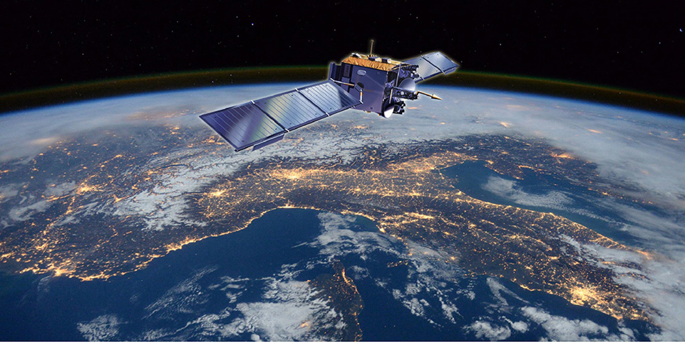
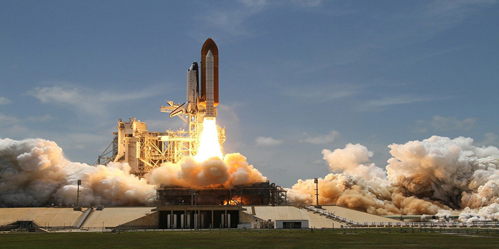
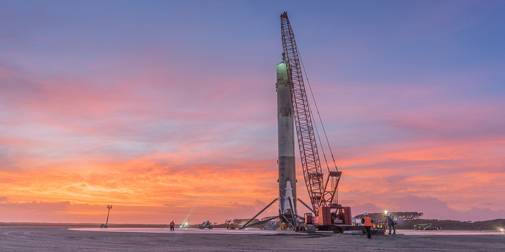
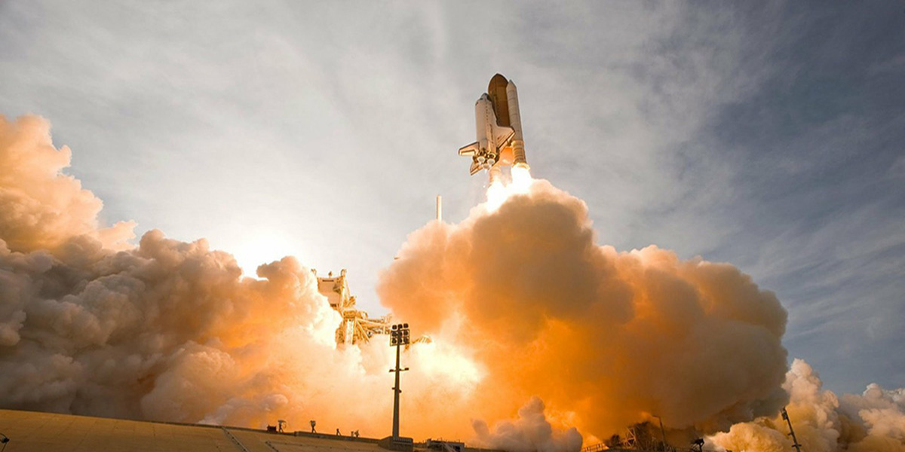
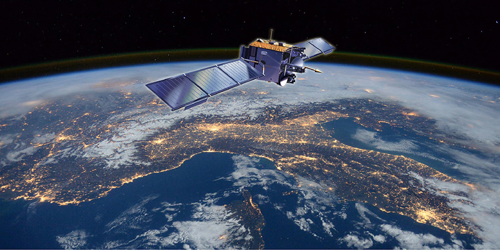
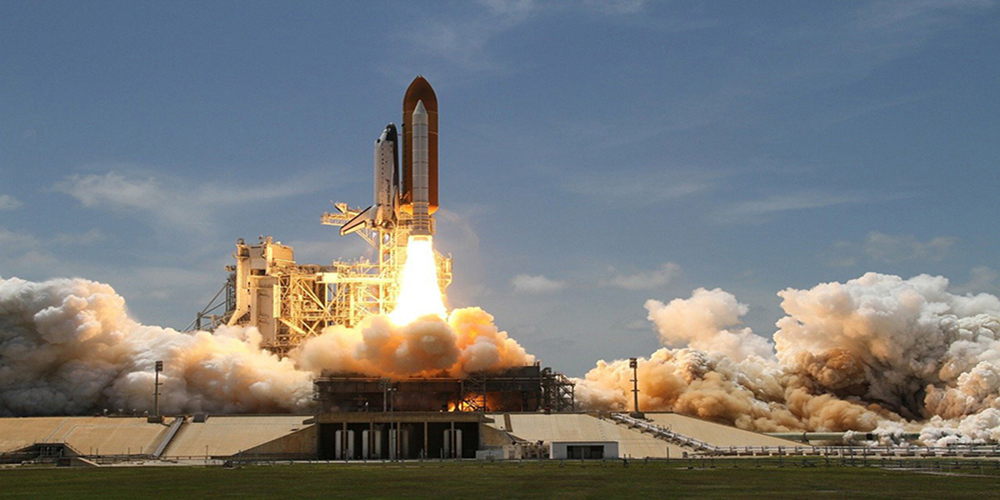
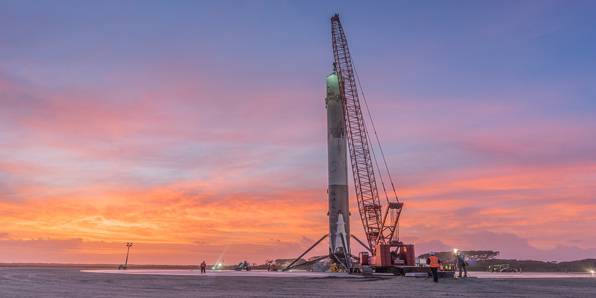
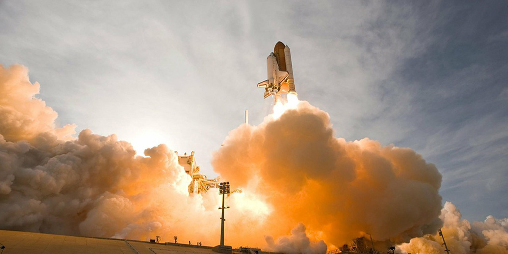

第六届中国（国际）商业航天高峰论坛在武汉开幕
2020年10月19日，第六届中国（国际）商业航天高峰论坛在湖北武汉开幕。本届论坛由科学技术部、中国国家航天局、中国载人航天工程办公室、湖北省人民政府指导，由武汉市人民政府、中国航天科工集团有限公司、中国航天科技集团有限公司、中国电子科技集团有限公司、中国航天基金会、中国宇航学会联合主办。
 







2020年10月19日，第六届中国（国际）商业航天高峰论坛在湖北武汉开幕。本届论坛由科学技术部、中国国家航天局、中国载人航天工程办公室、湖北省人民政府指导，由武汉市人民政府、中国航天科工集团有限公司、中国航天科技集团有限公司、中国电子科技集团有限公司、中国航天基金会、中国宇航学会联合主办。
2020年9月19日，中国空间站工程巡天望远镜粤港澳大湾区科学中心（以下简称“中心”） 成立仪式在中山大学珠海校区举行。中国载人航天工程总设计师周建平，中国载人航天工程办公室主任郝淳，中国载人航天工程空间科学首席专家顾逸东等出席了本次活动。
2020年11月21日，中国空间站工程巡天望远镜北京大学科学中心（以下简称“中心”） 成立仪式在北京大学举行。中国载人航天工程总设计师周建平，中国载人航天工程办公室主任郝淳，中国载人航天工程空间科学首席专家顾逸东等出席了本次活动。
2020年7月29日，中国载人航天工程办公室在京组织召开了载人航天工程修史工作座谈会。载人航天工程首任总设计师王永志，载人航天工程办公室原主任谢名苞、王文宝，载人航天工程办公室主任郝淳等领导出席了会议。会上，载人航天工程办公室主任郝淳介绍了载人航天工程修史工作的意义和背景。
宇航员展示 |

王亚平
刘旺
刘伯明
费俊龙 |

杨利伟
景海鹏
刘洋
翟志刚 |
载人航天是当今世界技术最复杂、难度最大的航天工程。”中国空间技术研究院空间站系统总设计师杨宏说，这个领域，代表了一个国家在科技和经济领域的实力。
1、预备航天员选拔:初选、复选、终选
2、训练期的航天员选拔
3、飞行乘组的选拔
4、成为航天员
舱内航天服:
舱内航天服是航天员在飞船上升和下降时在航天器内使用的航天服。
还有舱外航天服
通常，一枚火箭的个头能与十多层楼相媲美，对于像长五B这样身高50多米的“大高个儿”们来说，“站”起来可不是一件简单的事。发射前，它们要完成的第一个重要步骤就是让自己第一次“站”起来。